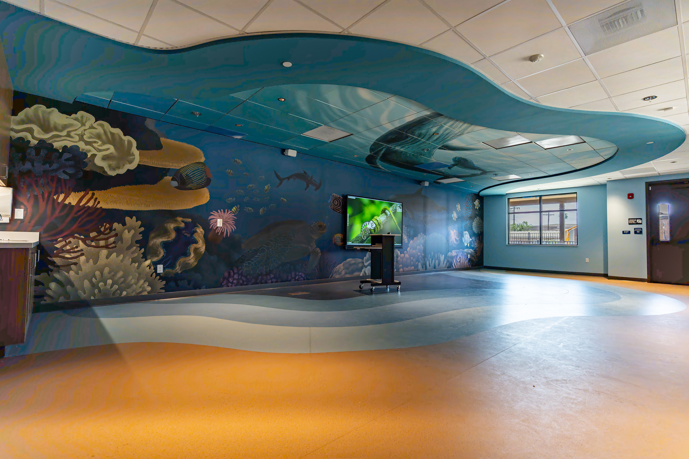

Written by: Rourke Blignaut
Date Written: 2/9/25
SANDAG has added 13 new routes to the Del Mar rail realignment project. Some of these ideas are old while others are new proposed ideas. Some residents said this will waste lots of money and would have a big impact on the fairgrounds. The project 7 - 9 billion to perform. If there are any updates, we will let you know.